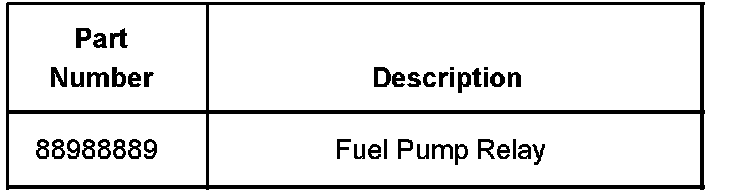
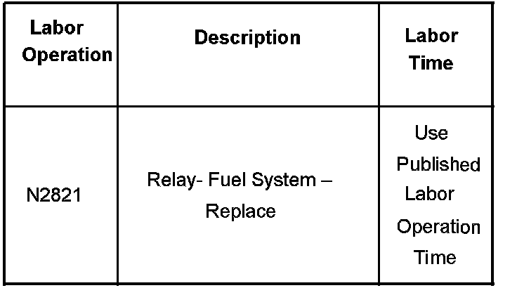

Fuel System - Hum/Buzz From Vehicle Rear/Battery Dies
Bulletin No.: 06-06-03-011BDate: February 16, 2007
TECHNICAL
Subject:
Hum or Buzz Noise From Rear of Vehicle and/or Possible Dead Battery (Check Fuel Pump Relay and Replace, if Necessary)
Models:
2007 Cadillac Escalade, Escalade ESV, Escalade EXT
2007 Chevrolet Avalanche, Silverado, Suburban, Tahoe
2007 GMC Sierra, Yukon, Yukon Denali, Yukon XL, Yukon Denali XL
with 5.3L or 6.2L Gas Engine (VINs J, M, 3, 0, 8 - RPOs LY5, LH6, LC9, LMG, L92) and Built Prior to October 13, 2006
Attention:
Use GMVIS to determine the vehicle build date.
Supercede:
This bulletin is being revised to add the production build date to the models. Please discard Corporate Bulletin Number 06-06-03-011A (Section 06 - Engine/Propulsion System).
Condition
Some customers may comment on a buzz or hum type noise coming from the rear of the vehicle after the vehicle has been turned off. The customer may comment that the noise is intermittent and may also be associated with a low or dead battery, causing a no start condition.
Cause
The contacts in the fuel pump relay may be staying engaged after the vehicle is shut off, causing the battery drain.
Correction
Check for the fuel pump relay staying engaged (sticking). If you find that the relay is sticking, replace the relay and retest the system.

Parts Information
Warranty Information

For vehicles repaired under warranty, use the table.

Disclaimer